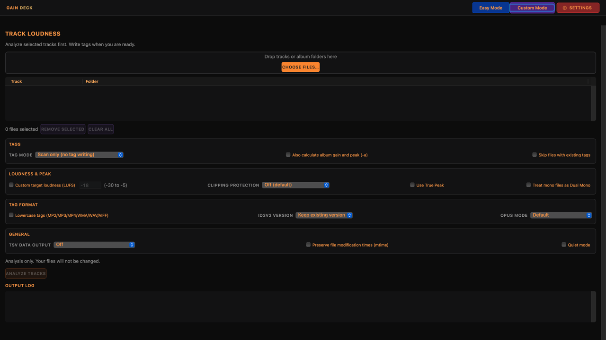
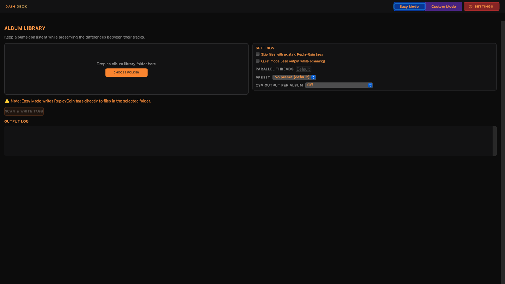
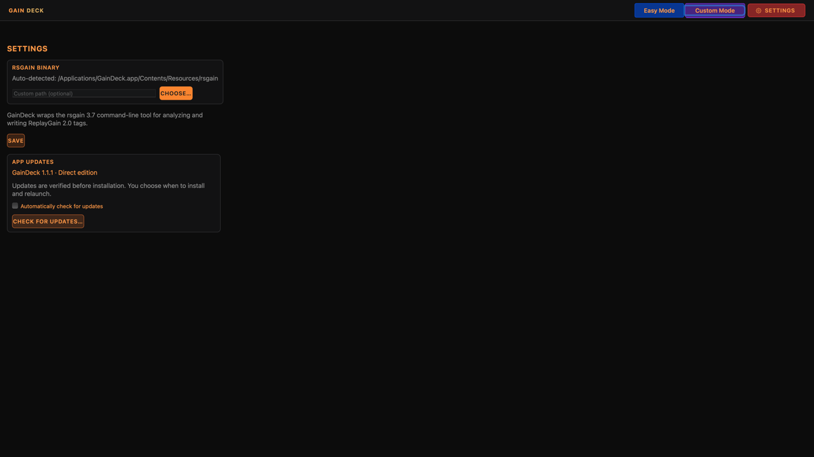

A folder at a time
Choose or drop an album-library folder. Apply a preset, skip tracks that already have tags, and scan and write ReplayGain tags across the selected library.
A WEBServices audio utility
Bring tracks and albums to a more consistent playback level. Scan your music, review loudness and peaks, and write ReplayGain tags for compatible players—all in a native Mac app.
Apple Silicon · ReplayGain 2.0 · Powered by rsgain
A closer look · Custom Mode

Release candidate
Download signed and notarized RC 3 with the refreshed interface, larger orange and gray text, and vivid buttons. Existing RC users can use Check for Updates. Full keyboard and updater installation acceptance remain pending; test with copies of your audio. Release notes include the checksum, engine sources, and known limitations.
Made for your music library
Choose or drop an album-library folder. Apply a preset, skip tracks that already have tags, and scan and write ReplayGain tags across the selected library.
Select individual tracks or folders. Analyze without writing tags, add or remove ReplayGain metadata, and adjust target loudness, peak protection, and tag-format options. Audio is not re-encoded.
Follow the output log while a scan runs. Enable tabular output to inspect loudness, gain, and peak values before deciding how to tag your music.
A look inside
Three focused views for your library: process album folders in Easy Mode, fine-tune track analysis in Custom Mode, and manage the audio engine and updates in Settings.


ReplayGain stores loudness information as metadata. A player that supports ReplayGain and has it enabled can use those tags to adjust playback volume.
A successful scan does not guarantee a change in every music app. Try a copied album in your usual player before processing your library.
Data and privacyIndependent Mac software
Report a problem, suggest an improvement, or support continued development.